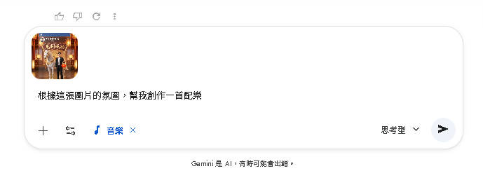
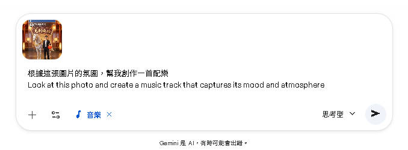
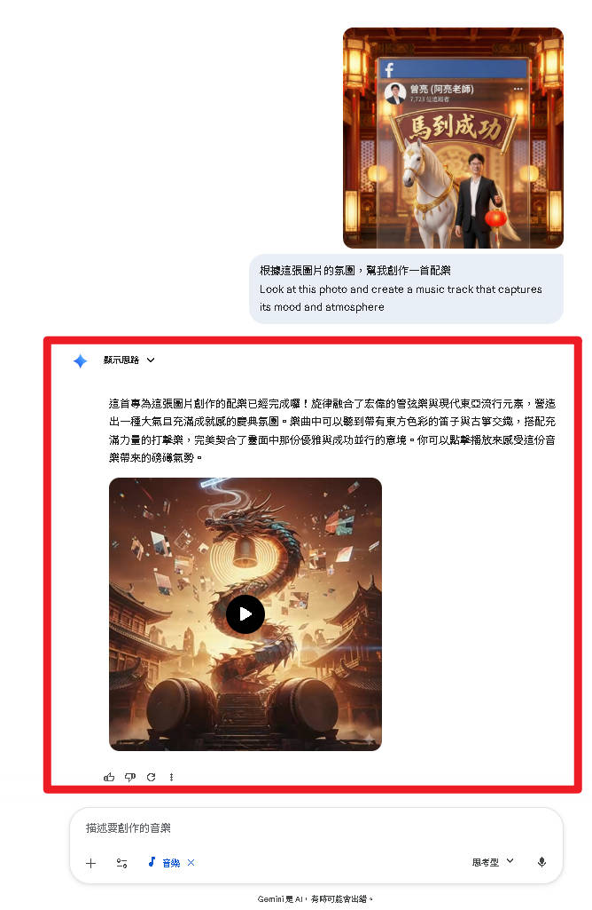

Lyria 3 最令人驚豔的功能——看圖作曲
Gemini 會從三個面向分析你上傳的圖片，然後自動生成與圖片情緒相符的 30 秒音樂。
辨識圖片中的物體、場景、人物，例如海灘、森林、城市、動物等。
分析色調與光線——暖色調傾向歡快，冷色調傾向沉靜，高對比則偏向戲劇性。
綜合判斷圖片傳達的情緒：寧靜、興奮、浪漫、神秘、壯闊等，以此決定曲風與節奏。
風景照、旅遊照、寵物照、藝術作品皆可
在聊天框點擊附件按鈕，選擇圖片上傳
上傳圖片後，搭配文字指令一起送出
根據這張圖片的氛圍，幫我創作一首配樂
Look at this photo and create a music track that captures its mood and atmosphere



不同類型的圖片，Gemini 會自動匹配不同的音樂風格：
| 圖片類型 | 可能生成的音樂風格 | 典型樂器 |
|---|---|---|
| 🌅 海邊夕陽 | 環境音樂 (Ambient) | 合成器、海浪音效、輕柔鋼琴 |
| 🎂 生日派對 | 流行舞曲 (Pop/Dance) | 電子鼓、合成器、歡快人聲 |
| 🌲 森林小徑 | 民謠吉他 (Folk) | 木吉他、口琴、自然音效 |
| 🌃 城市夜景 | 電子爵士 (Electro Jazz) | 薩克斯風、電子節拍、貝斯 |
| 🏔️ 雪山壯景 | 管弦樂 (Orchestral) | 弦樂、銅管、定音鼓 |
| 🐶 可愛寵物 | 小品音樂 (Light Music) | 烏克麗麗、木琴、口哨 |
除了單純上傳圖片，你還可以同時加上詳細的文字描述，讓生成結果更符合你的需求。
根據這張秋天楓葉的照片，創作一首帶有鋼琴和大提琴的輕柔古典風配樂，速度慢一些，情緒偏向溫暖懷舊
場景氛圍、色彩基調、情緒方向
指定曲風、樂器、速度、人聲偏好
AI 綜合兩者資訊，產出更精確的 30 秒音樂